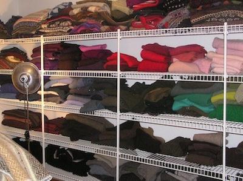

Building a well... one mitten at a time!
We are a Small Group of Willow Creek women, who were looking for our next service project, when one of our dear ladies got a powerful whisper. A friend of hers was making beautiful mittens from used sweaters... Why couldn't we make and sell them, and use the profits to buy a well in a poor village that has no access to clean water? We loved the cause, but truth be told, some of us thought it was a pretty far fetched idea. Mittens? Really? Even so, we all agreed to honor the whisper and give it a try.
 We started resale shopping, making tags, washing sweaters, picking up lint balls all over our houses, cutting, sewing, selling and learning to run a business. What a wild adventure... what a challenge! Nine women with different ideas and opinions? We had no idea what we were getting into... how much we would learn... or how successful we would be. Our project has been truly blessed!
To our amazement, our Paws Mittens have been selling so fast, that in a few short months we have raised enough to buy our first well! We hope to build many more, with your help. Only God could use recycled sweaters and fleece to save lives and transform a village! So many people have supported our cause, and we are so grateful! If you'd like to be part of our mission... Buy our mittens! Or donate sweaters (at least 60 percent wool), or fleece garments.